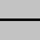
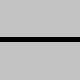
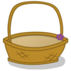
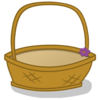

Догађаји миша¶
У примеру “прекидач” смо показали како можемо да реагујемо у програму када корисник притисне тастер миша. Иако корисник посматра клик као једну акцију, видели смо да је за рачунар то низ догађаја који почиње догађајем типа pg.MOUSEBUTTONDOWN.
У наредним примерима и задацима ћемо користити укупно три типа догађаја који настају употребом миша:
Спуштање било ког тастера миша (као у примеру са прекидачем), када dogadjaj.type има вредност pg.MOUSEBUTTONDOWN
Подизање тастера миша, када dogadjaj.type има вредност pg.MOUSEBUTTONUP
Покрет миша, када dogadjaj.type има вредност pg.MOUSEMOTION. Заправо, током померања миша генерише се више оваквих догађаја (сваки од њих описује неко мало померање миша у неком веома кратком временском интервалу, тако да сваки такав догађај обично описује померање тек за неколико пиксела).
Објекти - догађаји чији је тип pg.MOUSEBUTTONDOWN садрже и неке додатне податке, као што су:
dogadjaj.pos - позиција миша у тренутку регистровања догађаја (коришћено у примеру са прекидачем)
dogadjaj.button - број од 1 до 5, који означава које дугме миша је притиснуто (1 - лево, 2 - средње, 3 - десно, 4 - скрол на горе, 5 - скрол на доле)
Неки од додатних података о догађају, које садрже објекти - догађаји типа pg.MOUSEMOTION су:
dogadjaj.pos - позиција миша након догађаја померања миша
dogadjaj.rel - уређени пар који описује колико се променила позиција миша од претходног догађаја померања миша
dogadjaj.buttons - трочлана листа логичких вредности, које за свако од три дугмета миша (0 - лево, 1 - средње, 2 - десно) одређују да ли је било притиснуто током померања миша.
Обрада клика - вежбање¶
Можда нисте приметили да у програму “прекидач” из претходне лекције светло може да се укључи и искључи било којим тастером миша. То је тако јер се догађај истог типа генерише за сваки тастер миша, а ми нисмо проверавали који тастер је био притиснут приликом наступања догађаја.

Задатак - леви тастер као прекидач: Ископирајте овде програм “прекидач”, а затим га дорадите тако да се укључивање и искључивање сијалице може обавити само левим тастером миша.
Помоћ: Користите податак dogadjaj.button.
Задатак - три прекидача: Искористите делове програма “прекидач” и направите програм који симулра рад три прекидача, као у примеру.
{kind=link}

 

{kind=link}


Остали догађаји миша¶
Као што је на почетку ове лекције речено, у програму се може реаговати и на догађаје отпуштања тастера миша и померања миша. Ради тога је потребно упоредити вредност dogadjaj.type са константама pg.MOUSEBUTTONUP и pg.MOUSEMOTION. Следе задаци у којима можете ово и да испробате.
Задатак - цртање линија: Довршите програм тако да се помоћу њега могу цртати праве линије, као у примеру.
Задатак - цртање линија са брисањем: Ископирајте доле програм за цртање линија, а затим додајте могућност да се све линије обришу кликом на десни тастер миша.
Помоћ: Да бисмо у програму разликовали леви и десни тастер миша, поново треба користити податак dogadjaj.button. Код у функцији obradi_dogadjaj сада треба да изгледа отприлике овако:
Задатак - превлачење: Следећи програм показује како да кориснику нашег програма омогућимо превлачење објеката.
Испробајте програм (превуците јабуке у корпу) и потрудите се да га разумете, а затим одговорите на питања испод.
 

{kind=link}

- редни број јабуке коју цртамо
- Покушај поново
- редни број јабуке коју превлачимо
- Тачно
- укупан број јабука
- Покушај поново
- број преосталих јабука на дрвету
- Покушај поново
Q-115: Шта представља променљива i_jabuka у програму?
-
Упари провере у програму са њиховим значењем.
Покушај поново!
- if mis_je_na_slici(dogadjaj.pos, korpa_poz, korpa_slika):
- да ли јабуку треба обрисати
- if mis_je_na_slici(dogadjaj.pos, pozicije_jabuka[i]
- да ли је корисник "узео" јабуку
- if len(pozicije_jabuka) == 0:
- да ли је игра завршена
- if i_jabuka >= 0:
- да ли је у току превлачење
- очитавамо да ли је тастер миша доле током померања
- То није згодан начин, јер тастер може бити притиснут на празном месту (корисник није "узео" предмет који треба да превлачи)
- превлачење је посебан тип догађаја
- Не, не постоји такав тип догађаја
- при обичном померању миша редни број "јабуке коју превлачимо" је -1
- Тачно
Q-116: Како у програму разликујемо превлачење од обичног померања миша?